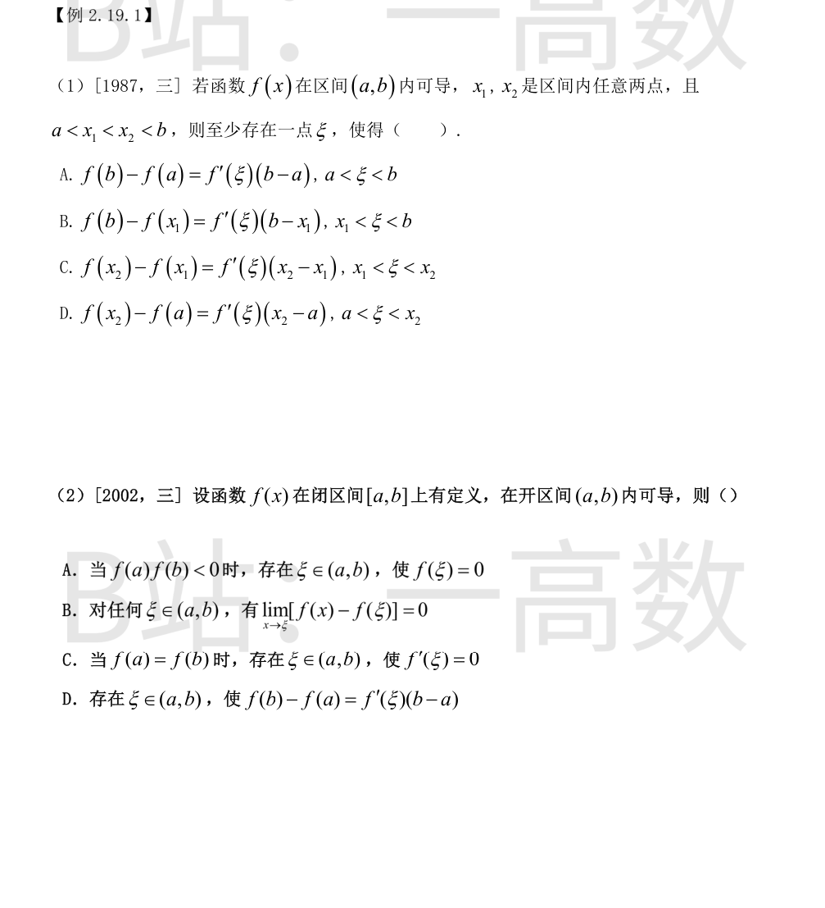
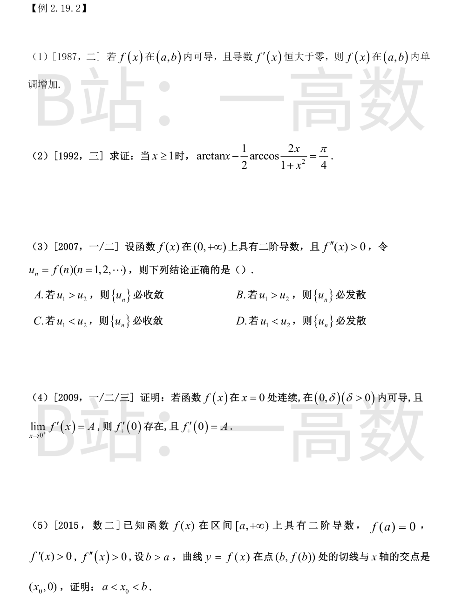
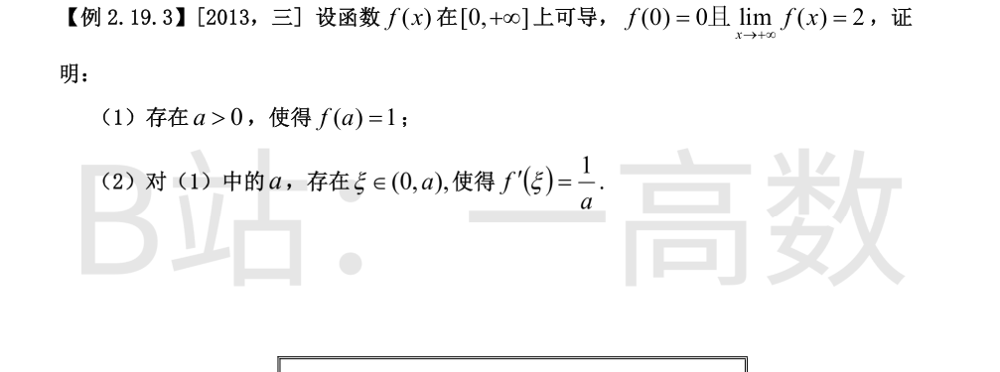

$f$ 在 $(a,b)$ 内可导 $\Rightarrow$ $f$ 在 $(a,b)$ 内连续。对 $a<x_1<x_2<b$，$f$ 在闭子区间 $[x_1,x_2]$ 上连续、$(x_1,x_2)$ 内可导，满足拉格朗日中值定理的全部条件，故存在 $\xi\in(x_1,x_2)$ 使
$$f(x_2)-f(x_1)=f'(\xi)(x_2-x_1),$$
即 **C 成立**。
A、B、D 都用到端点 $a$ 或 $b$ 处的值 $f(a)$、$f(b)$：$f$ 仅在开区间内有定义、在端点处未必有定义或连续，中值定理不能用于含端点的区间。反例：$f(x)=\dfrac{1}{x}$ 在 $(0,1)$ 内可导，取 $a=0,\ b=1$，则 $f(a),f(b)$ 均无定义，A、B、D 的等式失去意义。
故选 C。
**B 正确**：$f$ 在任意 $\xi\in(a,b)$ 处可导 $\Rightarrow$ $f$ 在 $\xi$ 处连续 $\Rightarrow$ $\lim\limits_{x\to\xi}f(x)=f(\xi)$，即 $\lim\limits_{x\to\xi}\left[f(x)-f(\xi)\right]=0$。
**A 错**：$f$ 在端点可以不连续。反例：$f(0)=-1,\ f(1)=1,\ f(x)=-1\ (0<x<1)$，则 $f(0)f(1)<0$，但 $f$ 在 $(0,1)$ 内无零点（零点定理需在闭区间上连续）。
**C、D 错**：反例：$f(0)=f(1)=0,\ f(x)=1\ (0<x<1)$。$f$ 在 $(0,1)$ 内可导且 $f'(x)\equiv1$：不存在 $f'(\xi)=0$ 的点，C 错；$f(1)-f(0)=0\ne1=f'(\xi)(1-0)$，D 错。（原因：$f$ 在端点不连续，罗尔定理与拉格朗日中值定理「闭区间连续」的前提不满足。）
故选 B。

任取 $x_1,x_2\in(a,b)$，$x_1<x_2$。$f$ 在 $[x_1,x_2]\subset(a,b)$ 上连续、$(x_1,x_2)$ 内可导，由拉格朗日中值定理，存在 $\xi\in(x_1,x_2)$ 使
$$f(x_2)-f(x_1)=f'(\xi)(x_2-x_1).$$
由条件 $f'(\xi)>0$ 且 $x_2-x_1>0$，故 $f(x_2)-f(x_1)>0$，即 $f(x_2)>f(x_1)$。由 $x_1,x_2$ 的任意性，$f$ 在 $(a,b)$ 内单调增加。
设 $f(x)=\arctan x-\dfrac12\arccos\dfrac{2x}{1+x^2}\ (x\ge1)$，则 $f$ 在 $[1,+\infty)$ 上连续。当 $x=1$ 时：
$$f(1)=\arctan 1-\frac12\arccos 1=\frac{\pi}{4}-0=\frac{\pi}{4}.$$
当 $x>1$ 时，记 $u=\dfrac{2x}{1+x^2}$，则 $u'=\dfrac{2(1-x^2)}{(1+x^2)^2}$，且
$$1-u^2=\frac{(1+x^2)^2-4x^2}{(1+x^2)^2}=\frac{(x^2-1)^2}{(1+x^2)^2},\qquad \sqrt{1-u^2}=\frac{x^2-1}{1+x^2}\ \ (x>1),$$
$$\left(\arccos u\right)'=-\frac{u'}{\sqrt{1-u^2}}=-\frac{2(1-x^2)}{(1+x^2)^2}\cdot\frac{1+x^2}{x^2-1}=\frac{2}{1+x^2}.$$
于是
$$f'(x)=\frac{1}{1+x^2}-\frac12\cdot\frac{2}{1+x^2}=0\qquad(x>1).$$
故 $f$ 在 $[1,+\infty)$ 上恒为常数：$f(x)\equiv f(1)=\dfrac{\pi}{4}$，即对一切 $x\ge1$，
$$\arctan x-\frac12\arccos\frac{2x}{1+x^2}=\frac{\pi}{4}.$$
记 $d_n=u_{n+1}-u_n=f(n+1)-f(n)=f'(\xi_n)$，$\xi_n\in(n,n+1)$（拉格朗日中值定理）。因 $f''(x)>0$，$f'$ 严格递增，而 $\xi_{n+1}>n+1>\xi_n$，故
$$d_{n+1}=f'(\xi_{n+1})>f'(\xi_n)=d_n,$$
即 $\{d_n\}$ 严格递增。若 $u_1<u_2$，则 $d_1=u_2-u_1>0$，从而 $d_n\ge d_1>0$，于是
$$u_n=u_1+\sum_{k=1}^{n-1}d_k\ \ge\ u_1+(n-1)\,d_1\ \xrightarrow[n\to\infty]{}\ +\infty,$$
故 $\{u_n\}$ 必发散，**D 正确**。
反例排除其余选项（均满足 $f''>0$）：
- $f(x)=(x-3)^2$：$u_1=4>u_2=1$，但 $u_n=(n-3)^2\to\infty$ 发散，A 错；
- $f(x)=e^{-x}$：$u_1=e^{-1}>u_2=e^{-2}$，但 $u_n\to0$ 收敛，B 错；
- $f(x)=x^2$：$u_1=1<u_2=4$，$u_n=n^2\to\infty$ 发散，C 错。
故选 D。
任取 $x\in(0,\delta)$。$f$ 在 $[0,x]$ 上连续（在 $x=0$ 处连续，在 $(0,x]$ 上连续）、在 $(0,x)$ 内可导，由拉格朗日中值定理，存在 $\xi_x\in(0,x)$ 使
$$\frac{f(x)-f(0)}{x-0}=f'(\xi_x).$$
当 $x\to0^+$ 时，$0<\xi_x<x\to0^+$。对任意 $\varepsilon>0$，由 $\lim\limits_{t\to0^+}f'(t)=A$，存在 $\delta'\in(0,\delta)$，当 $0<t<\delta'$ 时 $\left|f'(t)-A\right|<\varepsilon$。于是当 $0<x<\delta'$ 时，$0<\xi_x<x<\delta'$，从而
$$\left|\frac{f(x)-f(0)}{x}-A\right|=\left|f'(\xi_x)-A\right|<\varepsilon.$$
按右导数定义，
$$f'_+(0)=\lim_{x\to0^+}\frac{f(x)-f(0)}{x}=A$$
存在且等于 $A$。（注意不能用洛必达法则，否则要用到 $f'(0)$ 存在这一待证结论。）
曲线在点 $\left(b,f(b)\right)$ 处的切线为 $y=f(b)+f'(b)(x-b)$，令 $y=0$ 得交点横坐标
$$x_0=b-\frac{f(b)}{f'(b)}.$$
**证 $x_0<b$：** 由拉格朗日中值定理，存在 $\xi\in(a,b)$ 使
$$f(b)=f(b)-f(a)=f'(\xi)(b-a).$$
因 $f'(\xi)>0,\ b-a>0$，故 $f(b)>0$；又 $f'(b)>0$，于是 $\dfrac{f(b)}{f'(b)}>0$，得 $x_0<b$。
**证 $x_0>a$：** 因 $f''(x)>0$，$f'$ 严格递增，而 $\xi<b$，故 $f'(\xi)<f'(b)$，从而
$$f(b)=f'(\xi)(b-a)<f'(b)(b-a)\ \Longrightarrow\ \frac{f(b)}{f'(b)}<b-a\ \Longrightarrow\ x_0=b-\frac{f(b)}{f'(b)}>b-(b-a)=a.$$
综上，$a<x_0<b$。

由 $\lim\limits_{x\to+\infty}f(x)=2>1$，取 $\varepsilon=\dfrac12$，存在 $X>0$，当 $x>X$ 时 $|f(x)-2|<\dfrac12$，即 $f(x)>\dfrac32>1$。取定 $b>X$，则 $f(b)>1$。
$f$ 在 $[0,b]$ 上连续（可导 $\Rightarrow$ 连续），$f(0)=0<1<f(b)$，由零点定理，存在 $a\in(0,b)$ 使 $f(a)=1$，显然 $a>0$。
由 (1)，$f(a)=1,\ f(0)=0$。$f$ 在 $[0,a]$ 上连续、$(0,a)$ 内可导，由拉格朗日中值定理，存在 $\xi\in(0,a)$ 使
$$f'(\xi)=\frac{f(a)-f(0)}{a-0}=\frac{1-0}{a}=\frac1a.$$